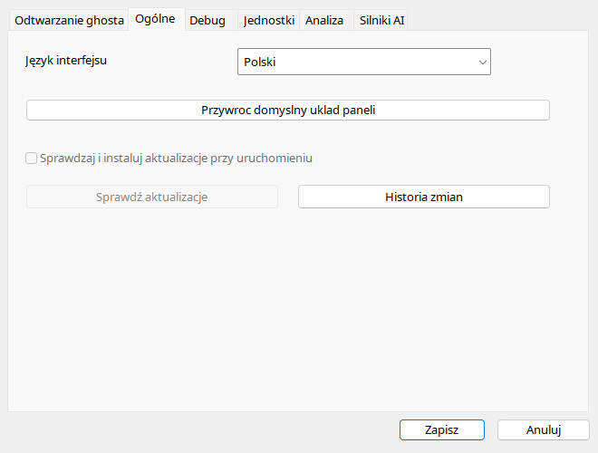

Automatycznie rozpoznaje jêzyk interfejsu Windows z uwzglêdnieniem wariantu regionalnego. Wybrany rêcznie jêzyk zastêpuje automat do czasu ponownego wybrania tej opcji. Dla jêzyków bez osobnej pomocy u¿ywany jest angielski CHM. Wydanie portable ma celowo wy³¹czone aktualizacje: zaznaczenie starego wpisu INI nie uruchamia pobierania. Setup dostarczony z t¹ wersj¹ jest tylko komunikatem o pracach. Aktualizuj przez rêczn¹ wymianê plików po zamkniêciu programu.
| Opcja / czynnoœæ | Dzia³anie i ograniczenia |
|---|---|
| Jêzyk | Automatyczny rozpoznaje jêzyk UI Windows i wariant regionalny, z fallbackiem do angielskiego. Nazwany jêzyk zastêpuje autodetekcjê i jest zapamiêtywany. |
| RTL | Arabski/hebrajski zmienia kierunek zwyk³ego UI, nie geometriê kokpitu. Powrót do LTR przywraca normalny kierunek. |
| Autoaktualizacje | Wy³¹czone w portable; INI nie aktywuje updatera. Setup jest tylko informacyjnym placeholderem. |
| SprawdŸ aktualizacje | Równie¿ wy³¹czone. Pobierz nowe wydanie rêcznie, zachowuj¹c dane u¿ytkownika. |
| Historia zmian | Po polsku dla polskiego UI, inaczej po angielsku. ShowChangeLog otwiera okno przy starcie. |
| Uk³ad domyœlny | Przywraca dokowanie i rozmiary; nie kasuje nagrañ. |
